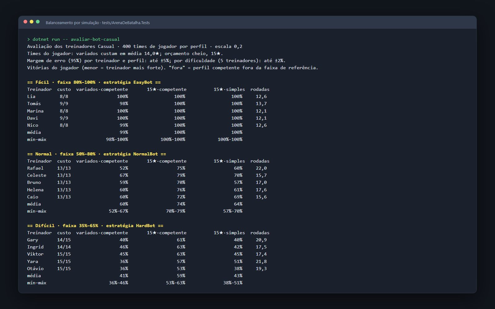
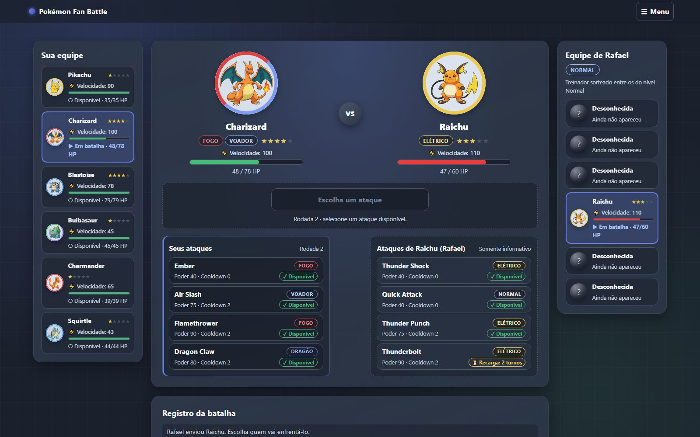
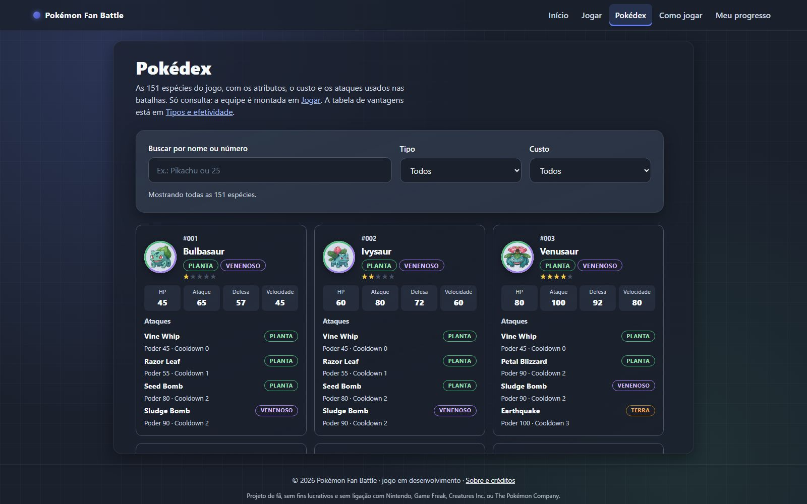

Projetos · Case study
Pokémon Fan Battle
Um jogo de batalhas Pokémon por turnos no navegador, em que montar a equipe pesa tanto quanto lutar, e cujo balanceamento foi calibrado por simulação.

Pelo olhar do
Game design
- Objetivo: montar a equipe pesar tanto quanto lutar, sem que os seis mais fortes sejam a resposta óbvia.
- Orçamento de 15 estrelas para 6 Pokémon, com custos de 1 a 5 definidos por uma simulação de todos contra todos.
- 15 treinadores em três dificuldades, medidos com 400 equipes por perfil de jogador.
- Dano calibrado: nocautes em um golpe de 82% para 15% e vantagem de atacar primeiro de 87,5% para 63%.
Pelo olhar do
Desenvolvimento
- Motor de batalha em C# no servidor (ASP.NET Core), que valida todas as jogadas.
- Regras num só lugar, reaproveitadas no bot, nas páginas e nos testes.
- Front-end sem bibliotecas, em HTML, CSS e JavaScript, para celular e teclado.
- 263 testes automatizados, parte no Edge ou no Chrome headless, de 320 a 1366 px.
Visão geral
O jogador monta uma equipe de 6 entre os 151 Pokémon de Kanto sem passar de 15 estrelas e enfrenta bots em três dificuldades, os 8 Ginásios e a Liga. Velocidade, tipos e o tempo de recarga dos ataques decidem cada partida. Construí tudo sozinho em 2 semanas, em 34 etapas. O projeto está concluído.
1. Conceber
O objetivo de design: uma batalha em que montar a equipe pese tanto quanto lutar, sem que a melhor escolha seja simplesmente pegar os seis Pokémon mais fortes. O público são fãs de Pokémon que gostam de estratégia rápida no navegador.
Restrições:
- rodar no navegador, sem instalação e sem conta (o progresso fica salvo no próprio navegador);
- nenhuma biblioteca externa no front-end;
- funcionar no celular e por teclado;
- ser um projeto de fã, sem fins lucrativos.
2. Desenvolver
- Motor de batalha em C# no servidor. A ordem dos turnos vem da velocidade, há 18 tipos (com tipo duplo) e cada ataque tem tempo de recarga. O servidor valida todas as jogadas.
- Orçamento de 15 estrelas para 6 Pokémon, com custo fixo de 1 a 5 estrelas por espécie. Os custos dos 151 saíram de uma simulação em que todos enfrentam todos.
- Bots com três estratégias (Fácil, Normal e Difícil): 15 treinadores no modo Casual e uma campanha com 8 Ginásios de equipes fixas.
- Liga Pokémon como desafio final. A chave é eliminatória e uma derrota tira uma insígnia, que precisa ser recuperada no Ginásio, com validação no servidor.
- Pokédex completa e página de tipos. A Pokédex tem busca e filtros por tipo e custo, e a tabela de efetividade é gerada da mesma fonte que o motor usa.
3. Testar
263 testes automatizados cobrem regras, motor, páginas e navegador. Parte deles abre o Edge ou o Chrome em modo headless para conferir o layout de 320 a 1366 px sem rolagem horizontal, alvos de toque de 44 px e fluxos reais de batalha.
Para o balanceamento, a escala de dano foi testada em 22.650 confrontos, e a taxa de vitória contra cada treinador foi medida com 400 equipes por perfil de jogador. Antes da calibração, as simulações mostraram dois problemas:
- 82% dos confrontos terminavam com um golpe só;
- quem atacava primeiro vencia 87,5% das vezes.


(ampliar imagem)4. Melhorar
- Dano calibrado (escala 0,2). Os nocautes em um golpe caíram de 82% para 15% e a vantagem de atacar primeiro, de 87,5% para 63%, mantendo a proporção entre os tipos.
- Custos refeitos por simulação, para que os seis melhores Pokémon não caibam juntos no orçamento.
- Treinadores ajustados por nível. A taxa de vitória do jogador ficou em 99–100% no Fácil, 60–74% no Normal e 41–59% no Difícil.
- Uma etapa dedicada à acessibilidade: foco visível, anúncios para leitor de tela, ícones junto das cores e respeito à preferência de reduzir movimento.
Resultados
O jogo não foi publicado, então não há números de usuários. Estes são os resultados internos verificáveis:
- 151espécies jogáveis
- 263testes automatizados passando
- 82% → 15%nocautes em um golpe após a calibração
- 3dificuldades calibradas por simulação
O que aprendi
- Balancear um jogo com dados, usando simulações repetíveis em vez de intuição.
- Manter as regras do jogo num só lugar, no servidor, e reaproveitá-las no bot, nas páginas e nos testes.
- Acessibilidade e responsividade custam menos quando entram cedo e são cobertas por testes.
Galeria


(ampliar imagem)

(ampliar imagem)Projeto de fã, sem fins lucrativos e sem ligação com Nintendo, Game Freak, Creatures Inc. ou The Pokémon Company.